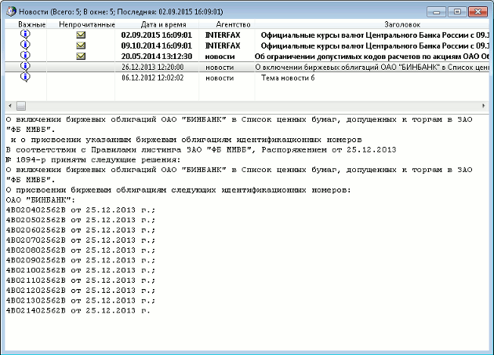

меню Создать окно / Новости
Просмотр лент новостей информационных агентств. Условия распространения новостей (платно/бесплатно), а также их источник,
определяются соглашением между информагентством и организацией, использующей
систему QUIK (биржей, брокером). Для возможности получения новостей обратитесь к
администратору системы QUIK.  Окно разделено на две части:
Назначение
Формат окна
Параметр
Значение
Важные
– важное сообщение
Непрочитанные
– непрочитанная новость.
Заголовки непрочитанных новостей выделяются в списке жирным шрифтом
Дата и время
Дата и время рассылки сообщения информационным
агентством. Формат определяется настройками операционной системы
Агентство
Наименование источника информации
Заголовок
Текст заголовка сообщения
Номер
Номер сообщения, присвоенный его
источником
В системе QUIK возможно создание нескольких таблиц новостей.О настройках получения и просмотра новостей см. Система/Настройки/Основные настройки... раздел «Новости».
Функции, доступные для данного окна, могут быть вызваны из пункта меню Действия или контекстного меню таблицы.
Дополнительно:
Функция поиска по новостям отличается от поиска в других таблицах наличием флажка «Только в заголовках». Если флажок установлен, то искомое значение определяется только среди заголовков новостей. Если флажок снят, то поиск осуществляется как в заголовках, так и в тексте принятых (т.е. прочитанных) новостей.
См. также Формат сохранения в текстовый файл.